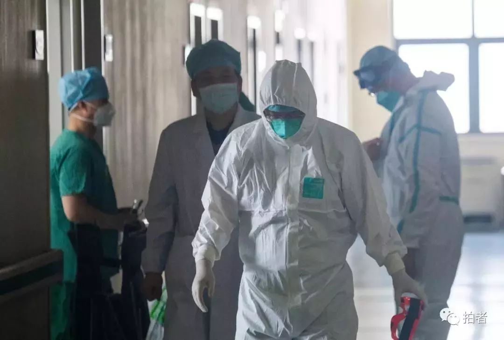
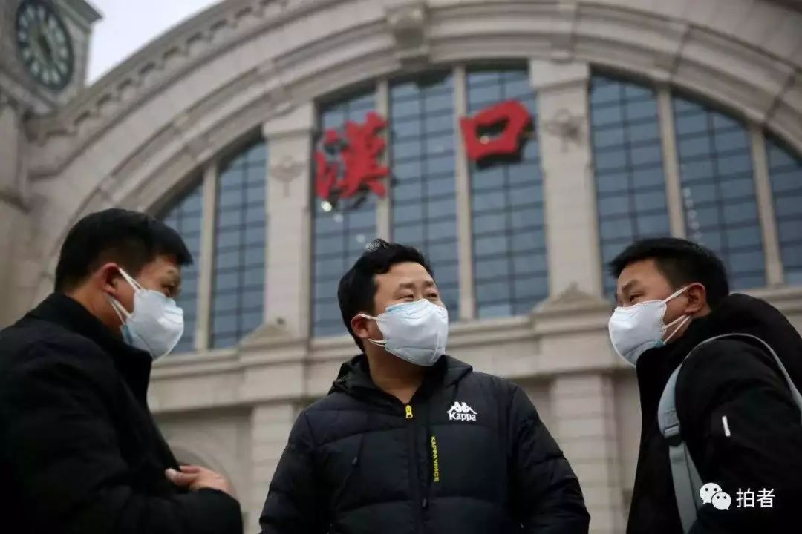

恐慌很正常，当疫情结束，才是心理问题高发期
原文链接 备份链接 疫情必然会在可见的时间里消散，生活终将回到正轨，免费援助的心理咨询师们也会回到自己的岗位上。参加过汶川地震援助、深圳光明新区滑坡等突发灾害救援的隋双戈知道，当各种支持、援助慢慢地撤回，应激状态消除，一些真正的问题才会渐 …
***** *****
*****
*****一名求助者的父母均被确诊，分别住在两家医院，她要在医院间来回奔波照料。**********打通电话时，她刚从病重的父亲那里出来，就在病房楼下，一会儿还要赶到另一家医院陪伴打针的妈妈。**********她在电话里哭着说，“不知道回来的时候爸爸还在不在。**********”*****

1月30日，武汉协和医院西院12层隔离病房清洁区内，换好装备的北京赴鄂援助医疗队队员。图/新京报拍者
文 | 新京报记者 张惠兰
编辑｜滑璇 校对 | 翟永军
►本文约6086字，阅读全文约需12分钟
近10天来，49岁的杜洺君听过了各种各样的哭：
有的人小声啜泣；有的人号啕大哭；有的人讲述自己和家人的故事，讲着讲着便开始哽咽，渐渐说不出话了；有的人似乎语气平静，但她可以想象，对方正在电话另一端静静流泪……
杜洺君是湖北省心理咨询师协会（下称“湖北心协”）常务秘书长，一名从业7年的心理咨询师，身在武汉。1月23日，离汉通道关闭的同一天，湖北心协决定开通一条心理援助热线，为武汉市、湖北省乃至全国的民众进行心理干预。
新冠肺炎疫情发生以来，包括北京师范大学心理学部、女性心理咨询平台“幸知在线”等在内的多家心理咨询机构、心理咨询师协会、高校心理学院系纷纷开通援助热线，为因疫情陷入心理危机的人群提供心理援助。

1月22日，武汉汉口火车站，佩戴口罩的旅客。图/新京报拍者
1月27日，“国务院应对新型冠状病毒感染的肺炎疫情联防联控工作机制”印发了《新型冠状病毒感染的肺炎疫情紧急心理危机干预指导原则》，要求各地防控指挥部统一领导疫情中的心理危机干预工作，提供必要的组织和经费保障。
1月28日，北师大心理学部热线开通的第二天，教育部发出通知，要求各省级教育部门积极推广北师大的做法，组建专门队伍，开通心理支持热线和网络辅导服务。
众多求助者中，既有一线医护，也有新冠病毒感染者及家属，但绝大多数是被疫情所扰的普通民众。热线接通时，他们可能刚刚脱下防护服，可能正奔波在照料亲人的路上，可能已独自隔离多日。他们中的许多人面临着心理咨询师无法解决的现实困境，但同样有许多人，会在挂掉电话前恢复平静，“好，我继续去做我该做的事。”
疫情下的危机干预
********* *********
*********
“幸知在线”创始人潘幸知接到过一名护士的求助。那是1月22日，护士前几天为肺癌患者做清创手术时感染了新冠病毒，那之后便开始恐惧、焦虑。
这样的情绪，是许多武汉市一线医护人员的共同状态。他们白天忙着救治病人，没空想这些，晚上回家后焦灼感一阵一阵地袭来。杜洺君也听过一名护士的哭诉，护士说自己下班后会“一场接一场地哭”。
在杜洺君看来，医护人员专业素养高、心理素质强，不到万不得已不会来电求助。但在来势汹汹的疫情面前，他们的精神负担往往是常人难以想象的，一旦得到喘息的机会，亟须心理危机干预。
“和日常心理咨询不同，心理危机干预是指危机事件发生后，对人的心理、行为、健康以及社会恐慌进行非常规的心理学处理。”湖北心协专家委员会主任、武汉大学心理学教授戴正清说。为了保证心理危机干预下的援助效果，很多平台都对接线咨询师进行了严格筛选。
“幸知在线”的援助启动后，有500多名志愿者报名参加，不少人持有咨询师资格证或社工证。但很多人没有危机干预经验。所以平台从中选择了几十名咨询师投入援助，并对其他志愿者进行了危机干预的专业培训，以成为后备力量。
北师大心理学部热线也要求咨询师有危机干预的经验，而且一线咨询经验要在300小时以上。杜洺君说，湖北心协派出的咨询师都在40岁以上。“只有你积累了一定的人生阅历，才能支持不同年龄层的求助者，比如没有养过孩子的人，可能没法设身处地地感受一位母亲的焦虑。”
一名湖北心协咨询师，正在接听援助热线。受访者供图
被确诊感染的护士向潘幸知求助的当天，咨询师龚星就加入了对这名护士的心理干预。龚星说，当时护士的体温已高达39摄氏度，烧到眼睛胀痛。“她白天吃不下饭，夜里整晚整晚地睡不着觉。她还住在医院的集体宿舍里，为了不让家人担心，也不敢告诉家人，就这么一个人承受着这份巨大的、莫名的恐惧。”
第二天上午，龚星和另一名咨询师、两名平台工作人员建立起一个陪护小组，专门为护士进行心理干预。“像这样的情况肯定是先（采取）一般化技术。”龚星解释，她安抚护士的情绪，告诉她任何遭遇类似事情的人都可能恐慌，这是一般人都会有的反应。龚星还安慰她，根据现有的信息，危重患者多是中老年人或有基础性疾病的患者，“你不会有太大问题。”那天晚上，护士睡得很安稳。
在杜洺君看来，龚星的话，体现了此次心理危机干预与普通咨询不一样的地方——咨询师要储备大量疫情知识、要实时关注疫情动态和国家政策，这样才能有效开解求助者。
接下来的一周，护士因为体温突然升高、与男友争吵，情绪波动了两次。龚星等人带着她做冥想，给予及时倾听、劝慰，护士的心理状态越来越稳定。“我们都在一起陪着她，她那种孤独的感觉就会淡下去。”龚星说。
2月1日，护士告诉龚星，她已基本痊愈，再过三天就能出院了。
一场没有硝烟的战争
**********************
杜洺君接听时间最长的一通电话是44分钟，来自武汉某医院的一名呼吸科医生。
那天是除夕夜，杜洺君挂断热线回到饭桌前才几分钟，电话又响了。话筒里传来一个疲惫的女声，她说自己在呼吸科前线，当天发热门诊大排长龙，已经连续上了9小时班，这会儿刚回家，累到灯都没有开。
没等杜洺君发问，女医生就把憋在肚子里的话一股脑倒了出来。她说因为怕上厕所耽误时间，她几乎一整天不喝水，只有嗓子哑到说不出话时，才打开随身携带的矿泉水瓶抿上两口。连日的高强度工作已经紊乱了她身体机能，每天晚上，她要吃1-3片安定才能入睡。
女医生说，自己快退休了，完全可以退居二线，孩子也要求她别去前线。但看着潮水般涌进医院的病人，自己却留在后方，她“做不到”。
除了疲惫，女医生还很焦虑。她说发热病人中不乏潜在的感染者，医护人员被感染的风险很大。因为工作时，戴上护目镜后水蒸气会在眼前弥漫，她没法对着电脑屏幕写病历，只好摘掉；许多老年患者听力不好，她和他们交流时要把嘴巴贴到他们耳边，对方回答时也会凑到她的耳边，飞沫根本无法阻挡。本应4小时一换的防护服，她和同事每人只能领到一套。他们会在防护服上写好自己的名字，下班后消毒，晾在通风处，第二天继续穿。
女医生一边说，杜洺君一边在脑中列出聆听、回应、澄清三个心理干预步骤。聆听是倾听求助者对自身处境、情绪、感受、想法的描述；回应是要肯定对方的价值观和信念；澄清是在理性层面上帮咨询者回忆、整理各种可以帮助他的资源。
等女医生倾诉完，杜洺君马上给予回应，肯定了她的责任感，代表所有武汉市民向她和她的同事致敬，说“我们在一起，在不同战线打这场没有硝烟的战争”。女医生顿了顿，“对，我们太难了。”
澄清时，杜洺君引导着女医生回忆过往，让她想起那些成功渡过的困境。慢慢地，她从语气中感到对方平静放松下来，“情绪和状态足够维持目前的工作和生活。”
那通电话结束时，杜洺君嘱咐女医生给自己做点吃的，女医生道了谢：“说完我就放松多了，这比吃什么东西都强。”
但杜洺君知道，挂下电话，再睡几个小时，女医生就会穿着那套反复消毒的一次性防护服重返战场。等待她的，将是又一个9小时不喝水、不上厕所的白班。
电话另一端，咨询师们要对求助者产生同理心、要站在求助者的角度思考问题，每个人承受的精神压力同样不小。北师大心理学部热线督导蔺秀云说，热线开通前，他们原本计划咨询师每6小时一轮班，但第一天就有咨询师反映强度太大，后调整为每3小时一轮班。“幸知在线”的团队督导张砾匀也表示，对于那些大量接触求助者的咨询师，督导们会时时关注，“有任何的情绪和问题，会第一时间干预。”
太多事，一个人承受不来
**********************
自1月23日热线开通以来，杜洺君发现，一线医护人员并非求助的主要群体。截至1月28日，她接了150余通电话，约95%的求助者是武汉市、湖北省甚至其他省份的普通市民。
1月28日早上7点多，武汉的天刚亮，正在值班的杜洺君接到了一名陌生女士的来电：我受不了了，我快崩溃了。才说了两句，女士哭了出来。
这名女士说，1月19日，父亲确诊感染了新冠病毒，由于本身患有糖尿病、高血压，病情危重；几天后，母亲也被确诊，程度较轻。父母均已年过七十，分别住在两家医院。她是家里的独生女，因为请不到护工，每天要在两家医院间奔波，就快撑不住了。
接通电话时，她刚从父亲的病房出来，准备去买早饭，就站在病房楼下。她告诉杜洺君，一会儿帮父亲喂过早饭后，还要赶到另一家医院陪伴打针的妈妈。她在电话里哭着说，“不知道回来的时候爸爸还在不在。”
除了担心至亲的离去，她也为自己感到恐慌。在病房陪护父亲时，除了口罩，她几乎没有防护，她自己也有孩子，但为了孩子的健康，只能与家人隔离。她号啕大哭起来：“万一被感染了，我该怎么办？我的家要完了！”
面对这样的情况，杜洺君要知道女士的身边还有谁能帮她，可询问后发现，没有亲友可以提供支持。“所以你是家里最重要的人，你得撑住了，才可以更好地照顾他们。”说完，杜洺君催促这位女士去吃饭，她要推动这位女士改变行为、调整状态，“因为行为的改变可以支持心理的改善。”
通话最后，女士逐渐平静下来。但杜洺君不放心，把女士的电话转给另一名咨询师，以便进行长时间的后续跟踪。在之后几天的回访中，女士说父亲已经脱离危险，她自己的状态也好多了。

1月30日，杜洺君在电脑前工作。新京报记者 马骏 摄
即便没有家人受到感染，疫情面前，普通人也会恐慌。许多人拨通了心理咨询热线，仅仅是因为被疫情带来的恐惧、焦虑、无力感所困扰。
北师大心理学部热线的咨询师接听过一名北漂女孩的电话，女孩说自己1月18日邀请身在武汉的家人来北京玩，之后爸爸和弟弟先后开始咳嗽，她和妈妈也发了高烧。
去医院看过后，医生认为这一家四口只是普通感冒，不是新冠肺炎。但女孩仍然寝食难安，每日自责，认为父母去机场的途中可能接触了新冠病毒感染者。
北师大心理学部热线督导蔺秀云分析，女孩和家人的身体问题是在应激情况下出现的不适症状，属于正常现象。咨询师开始引导女孩，让她从自责情绪中解脱出来，转而关注当下能做的有意义的事。“这样她很快就走出来了。”蔺秀云说。
“很多人打来电话时都是一个人，他们跟热线讲的是和亲人不敢讲、不能讲的话。”杜洺君说，许多在武汉工作的外地年轻人打进热线，说自己本想回家探亲，但回不去了。他们不想让家人担心，不愿告诉家人自己的真实处境，“（因为）他们也进不来，我们也出不去。”
一名年轻男士在电话里说自己很想哭。杜洺君安慰道“男人也可以哭”，他就真的“哇”地一声哭了出来。杜洺君说，这种时刻最让她动容，有时，她也会在电话另一头默默流泪。
既有心理救援，又有医学救援、经济救援
**********************
求助者们面临的不仅是负面情绪，还有疫情引发的各种现实问题。后者让咨询师们感到无能为力。
几乎所有平台的咨询师都接到过这样的电话：口罩不够了，物资不够了，床位不够了……一名武汉市民问杜洺君：我家只有一个口罩了，怎么办？杜洺君想到了社区，问社区是否在派发口罩。对方说，社区通知一个人只能领一个口罩，“戴一个口罩出去，然后扔掉，再领一个口罩回来，还不如不去。”
咸宁市心理咨询师协会咨询师张小可，接到过一名咸宁籍男士的求助。男士说，春节前带着女儿回山西老家时，因为车牌号是咸宁的，很快被周围邻居和社区要求在家隔离。5岁的女儿发着烧，家里没有口罩，吃的也不多了，他告诉张小可，自己“快崩溃了”。
张小可帮他分析解决这些问题的途径，生活物资方面可以向社区和政府求助，孩子发烧可以到网上寻找在线医生，或请相关部门从中协调。“但我也不确定这种方法能不能奏效，我们只能试着引导他们，最后的结果我们不清楚。”张小可说。
由于武汉市内公共交通停摆，不少患有基础疾病和精神疾病的市民陷入困境。
有抑郁症患者打进湖北心协的热线，称自己每隔一两周就要到医院拿处方药，现在药快没了，不知该怎么办；有肿瘤患者向咨询师求助，说要定期到医院化疗，现在去不成了；还有老年患者要定期到医院复查糖尿病，现在复查也断了。
遇上这样的情况，杜洺君会尽力为求助者提供帮助，如果对方就诊的医院与湖北心协有合作关系，她就会帮忙把电话转过去。“但更多的时候就是建议他们打110或者120，没有其他办法。”

1月29日，武汉汉口沿江大道，由于公共交通停运，一名女子边骑车边拖着箱子前行。图/新京报拍者
疫情发生后，武汉市精神卫生中心危机干预热线“心心语”开通了24小时服务。据中心2月1日发布的统计数据，疫情出现以来的热线求助中，“疫情期间的现实问题解决（买药、出行、诊断、就医、食品口罩等的供应）”高居求助民众“关注问题排行榜”榜首。
1月27日，该中心发布了《“新型肺炎”心理危机干预（武汉建议）》（下称《建议》），表示有效心理干预的基础包括：政府疫情通报公开、透明、及时；保障医疗物资和市民生活必需品的需求，保障运行城市功能人员的交通；保障对弱势群体的照顾。《建议》还呼吁，面对“如此重大的社会危机，必须政府先行”。
“虽然心理危机干预通常针对个体，但效果是致力于群体的。因为公共卫生事件不是对一个人产生影响，而是对整个社会、整个国家产生影响。”戴正清说，在这个前提下，理想的心理危机干预应在国家法律政策指导之下，由中央统一部署，既有心理救援，又有医学救援、经济救援。
为PTSD患者做好准备
**********************
近日，湖北心协的咨询师接到了一个求助电话，一名男士说，丈母娘因为感染新冠病毒住进了重症监护室，妻子陪护母亲时看到有患者不治离世，被白布包裹着抬了出去，还看到苦等床位而不得的病人开始攻击医生。后来妻子也被确诊感染了新冠病毒，她极度恐慌，担心自己和母亲会不会遭遇不幸。
这名男士说，妻子最近精神紧张，周围一有人咳嗽，她就会想“是不是那种肺炎又来了”；晚上也会做噩梦，梦里经常出现白天在医院看到的可怕场景。
在戴正清看来，这名男士的妻子已经表现出了典型的创伤后应激障碍(PTSD)症状。但男士说，妻子目前拒绝接受心理援助，自己非常担心，打电话过来求援。和咨询师沟通后，这名男士决定以后要学些心理咨询，安抚妻子的情绪。
“幸知在线”的心理咨询师张砾匀也察觉到了PTSD的苗头。她所在的心理援助群里，一名武汉市民提到隔壁楼有患者被120“拖走了”。“她用的词是‘拖走了’，而不是接走、带走等等。可能她现在还无所谓，但这个场景以后可能成为她的创伤场景。”张砾匀说。
张砾匀今年49岁，已在心理咨询一线十几年。2008年，她参与过汶川地震后的心理援助，2013年又参加了雅安地震的震后咨询。张砾匀说，当危险来临时，人们关注不到自己深层的心理需求，所以现在还没出现大规模的PTSD人群。她估计，大批的PTSD患者应该在疫情结束后出现，在这之前，那些被替换下来的一线医护可能出现PTSD症状，“（应该在）2月下旬或2月底”。

1月28日，蔡甸区，环卫工人包言保在空荡荡的街道上执行清扫任务。图/新京报拍者
戴正清认为，潜在的PTSD人群包括新冠肺炎患者及其家属、医护人员、一线志愿者，乃至抗疫前线的公务人员。
“灾难过后，才是真正的处理大量心理问题的时期。”武汉市精神卫生中心儿童康复部主任汤珺告诉新京报记者，中心已经开始着手准备，在安抚大家当前情绪的同时，培训心理治疗师如何处理灾后可能出现的心理问题。
杜洺君也想到了这一点。她说，湖北心协已开始准备灾后心理救援，目前正在搜集整理典型案例和问题，为下一阶段的心理援助制作工作指南。未来，湖北心协的咨询师也将参与对PTSD群体的援助，“针对每一位求助者的不同情况，有的人可以接受线上咨询，有的人必须在线下（做面对面的咨询）。”
*洋葱话题*
*▼*
*你尝试过心理咨询吗**？*
*后台回复关键词*****“洋葱君” ，加入读者群****
***推荐阅读***

肺炎时期的“生门”故事

武汉定点医院一床难求，患者居家用衣柜隔离


*********既然在看，就点一下吧****** *********
*********
原文链接 备份链接 疫情必然会在可见的时间里消散，生活终将回到正轨，免费援助的心理咨询师们也会回到自己的岗位上。参加过汶川地震援助、深圳光明新区滑坡等突发灾害救援的隋双戈知道，当各种支持、援助慢慢地撤回，应激状态消除，一些真正的问题才会渐 …
原文链接 备份链接 燃财经（ID:rancaijing）原创 作者 | 孔明明 编辑 | 周昶帆 在抗击新型冠状病毒感染的肺炎中，看不见的敌人除了无形的病毒，还有人们心里的创伤和危机。 昼夜连续工作、因确诊而感到恐慌、被隔离无法出门、因为 …
原文链接 备份链接 GQ报道：一周前，有一条护士情绪崩溃的视频在微信上传播很广。在一个办公室里，有名女护士嚎啕大哭，情绪崩溃，有一名女同事去拍背安抚她，其他人继续沉默地吃饭。 这个视频给了很多人巨大的冲击，大家非常担心一线医护人员的心理状 …
原文链接 备份链接 *▲ *2020年1月24日，在武汉大学中南医院重症隔离病房，医护人员为病人治疗。 （新华社记者 熊琦/图） 全文共*3298*字，阅读大约需要*7*分钟。 有医生刚脱下工作服，巨大的压力让其瞬间变身“小女生”坐在房 …
原文链接 备份链接 现在武汉那些专门的传染病医院，床位紧张，还有不少人拿着被子铺盖在医院输液，等待入院。我去复查时也看到有类似“一床难求”的情况。我还算是不幸中的万幸吧，自己吃药加上在家隔离就恢复了。 口述 | 余 毅（化名） 整理 | …